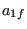

*OBJECTIVE
Keyword type: step
With *OBJECTIVE one can define the objective functions in a sensitivity analysis. Right now the following objectives are allowed for TYPE=COORDINATE design variables:
- DISPLACEMENT: the sum of the square of the displacements in all nodes of the structure or of a subset if a node set is defined
- EIGENFREQUENCY: all eigenfrequencies calculated in a previous *FREQUENCY step
- MASS: mass of the total structure or of a subset if an element set is defined
- SHAPEENERGY: internal energy of the total structure or of a subset if an element set is defined
- STRESS: the maximum von Mises stress of the total structure or of a subset if a node set is defined. The maximum is approximated by the Kreisselmeier-Steinhauser function
 | (495) |
where  is the von Mises stress in node i,  and
and  are user-defined parameters. The higher the closer
are user-defined parameters. The higher the closer  is to the actual maximum (a value of 10 is recommended; the higher this value, the sharper the turns in the function). is the target stress, it should not be too far away from the actual maximum.
is to the actual maximum (a value of 10 is recommended; the higher this value, the sharper the turns in the function). is the target stress, it should not be too far away from the actual maximum.
and for TYPE=ORIENTATION design variables:
- DISPLACEMENT: the displacements in all nodes.
- EIGENFREQUENCY: all eigenfrequencies and eigenmodes calculated in a previous *FREQUENCY step.
- GREEN: the Green functions calculated in a previous *GREEN step.
- MASS: mass of the total structure or of a subset if an element set is defined
- SHAPEENERGY: internal energy of the total structure or of a subset if an element set is defined
- STRESS: the stresses in all nodes.
There are no parameters. Exactly one *OBJECTIVE keyword is required in a *SENSITIVITY step. This keyword has to be followed by at least one objective function. If a *CONSTRAINT card is used within the step exactly one objective function must be defined within the step.
First line:
Second line:
- an objective function
- an element or node set, if appropriate
- for the Kreisselmeier-Steinhauser function (only for the coordinates as design variables and the stress as target)
- for the Kreisselmeier-Steinhauser function (only for the coordinates as design variables and the stress as target)
Repeat this line if needed. The objective functions SHAPEENERGY, MASS, DISPLACEMENT and STRESS require a *STATIC step before the *SENSITIVITY step, the objective function EIGENFREQUENCY requires a *FREQUENCY step immediately preceding the *SENSITIVITY step and the objective function GREEN requires a *GREEN step before the *SENSITIVITY step. Therefore, the {SHAPEENERGY, MASS, DISPLACEMENT, STRESS} objective functions, the {EIGENFREQUENCY} objective function and the {GREEN} objective function are mutually exclusive within one and the same *SENSITIVITY step.
Example:
*OBJECTIVE
DISPLACEMENT,N1
defines the sum of the square of the displacements in set N1 to be the objective function.
Example files: sensitivity_I.